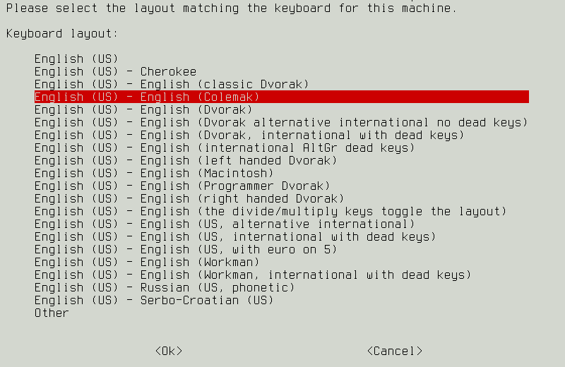
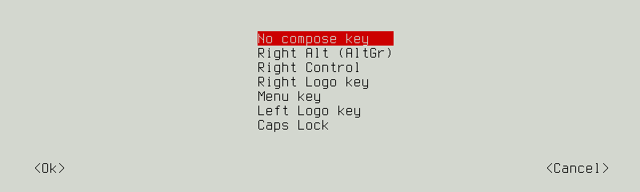
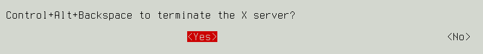

Change a default QWERTY keyboard layout to Colemak on Debian.
Let's go!
I am a recent convert to (slow) touch typing, and - surprise - it turns out we have learned new things about making keyboards since QWERTY made its appearance in the 19th century! Colemak is an alternative keyboard layout that - by changing the location of less than 20 keys - significantly reduces finger movement and makes typing feel much more comfortable!
No need to throw out your keyboard. It is easy to remap the keys for different layouts and toggle back and forth between mappings.
Try out Colemak
Colemak is already installed in Debian. Display current settings in X and switch to Colemak using the setxkbmap command ...
$ setxkbmap -query
rules: evdev
model: pc105
layout: us
$ setxkbmap us -variant colemak
$ setxkbmap -query
rules: evdev
model: pc105
layout: us
variant: colemak
When I first started using Colemak my friend Giles (longtime Dvorak user) suggested creating these easy-to-remember aliases in ~/.bashrc to toggle between keyboard mappings ...
alias arst="setxkbmap us && ~/bin/keyboardconf"
alias asdf="setxkbmap us -variant colemak && ~/bin/keyboardconf"
My shell script keyboardconf loads appropriate ~/.xbindkeysrc and ~/.xmodmap files for different keyboard types that I use. These configuration files must be reloaded when changing a keyboard mapping.
Colemak as default layout
Install some keyboard config tools ...
$ sudo apt install console-setup keyboard-configuration
Default keyboard layout in Debian is configured in /etc/default/keyboard and is shared between X and the command line ...
$ cat /etc/default/keyboard
[...]
XKBMODEL="pc105"
XKBLAYOUT="us"
XKBVARIANT=""
XKBOPTIONS=""
BACKSPACE="guess"
Set Colemak as the new default by either manually editing this file, or run ...
$ sudo dpkg-reconfigure keyboard-configuration
Keyboard Model
Keyboard layout
Key to function as AltGr
Compose key
Control+Alt+Backspace
View changes ...
$ cat /etc/default/keyboard
[...]
XKBMODEL="pc105"
XKBLAYOUT="us"
XKBVARIANT="colemak"
XKBOPTIONS="terminate:ctrl_alt_bksp"
BACKSPACE="guess"
Activate changes in X ...
$ sudo udevadm trigger --subsystem-match=input --action=change
Activate changes in the console ...
$ sudo setupcon
... or reboot.
Bootup
Set the keyboard to Colemak at bootup by modifying /etc/initramfs-tools/initramfs.conf to read the keyboard mapping ...
# Load a keymap during the initramfs stage.
#
KEYMAP=y
Whenever modifying initramfs it is necessary to rebuild to apply changes ...
$ sudo update-initramfs -u
Links: wiki.debian.org/Keyboard and man 5 keyboard
Happy hacking!